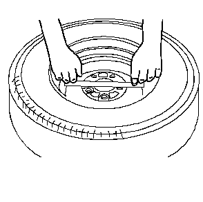
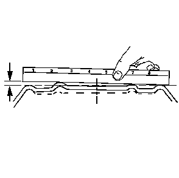
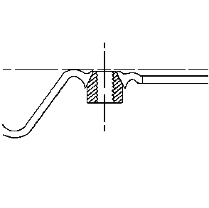

车轮安装面的检查
当车轮出现弯曲、凹陷或者端面或径向跳动过大时，都必须更换车轮。车轮跳动量超过规定值可能引起令人不快的振动。

1.
用干净的抹布和工业酒精或同等品，彻底清洁车轮安装面。
2.
用一根203-229毫米（8-9英寸）长的直尺。将直尺置于车轮内侧的安装面上。尝试在安装面范围内上下晃动直尺。
3.
对于铝制平底座式车轮，在内侧安装面上至少3-4个不同位置上重复步骤2中的程序。
如果直尺可以晃动，说明安装面已经弯曲，必须更换车轮。
4.
检查车轮/螺母安装孔是否因过度紧固车轮/螺母而损坏。检查车轮/螺母凸台是否塌陷。检查车轮凸台是否开裂。

5.
对于钢制车轮，在内侧安装面上至少3-4个不同位置上重复步骤2中的程序。
•
外侧安装环设计为可举升稍高于内侧安装环。
•
如果直尺可以晃动，说明安装面已经弯曲，必须更换车轮。

6.
检查车轮/螺母安装孔是否因过度紧固车轮/螺母而损坏。检查车轮/螺母凸台是否塌陷。检查车轮凸台是否开裂。
告诫：
使用非上汽通用汽车原装车轮可能导致：
车轮轴承、车轮紧固件和车轮损坏
因与车上的相邻部件之间的间隙改变而导致轮胎损坏
因磨胎半径改变而导致车辆转向稳定性不良
因离地间隙改变而导致车辆损坏
车速表和里程表不准确
注意:
•
更换车轮必须在以下几个方面与原装车轮相等：
–
载重能力
–
车轮直径
–
轮辋宽度
–
车轮偏置距
–
安装配置
•
车轮尺寸或型号不正确会对以下情况产生影响：
–
车轮和轮毂轴承寿命
–
制动器冷却
–
车速表/里程表校准
–
车辆离地间隙
–
轮胎至车身和底盘的间隙
7.
如果车轮出现弯曲，则应更换车轮。
8.
如果车轮/螺母凸台部位开裂，则应更换车轮。
用气门杆附近轮辋上压印的2或3个字母代码，识别钢制车轮。铝制车轮背面铸有代码、零件号和制造商标识。